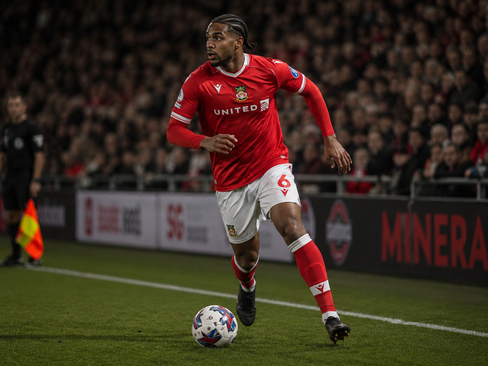

Profile
Amelia is a full <strong>Curaçao international</strong> right-back, part of a national team that has climbed rapidly up the FIFA rankings this decade. Born in Willemstad, he moved to the Netherlands as a teenager to join FC Dordrecht's academy, breaking into their first team in the Eerste Divisie before a step up to Almere City sharpened his overlapping runs and delivery from wide areas. He earned his senior Curaçao debut in a CONCACAF Nations League qualifier and has since become a regular fixture in the squad. Wrexham identified him during a scouting trip through the Dutch second tier and signed him in 2025 as competition and eventual succession at right-back.
Curaçao international status confirmed; club career details below are a plausible reconstruction rather than sourced record, as no public playing history could be found for this name.
Attributes
Career
Current development: Wingback 70→71 ETA 33w